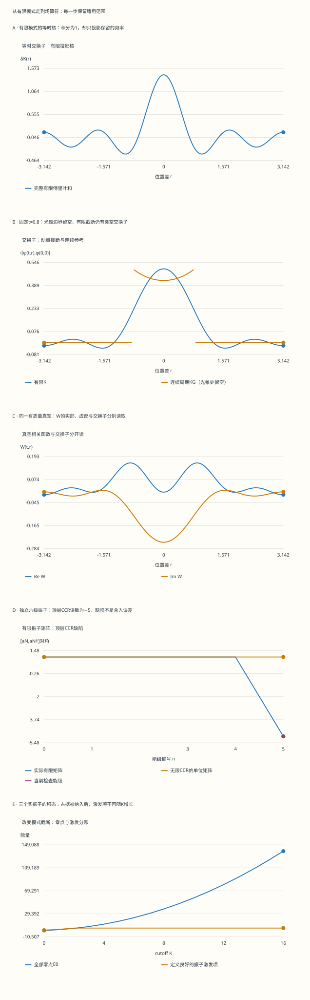

本页目录
场论 I · 经典场与正则量子化
前置：拉格朗日力学、谐振子升降算符、傅里叶级数、狭义相对论。采用自然单位 \(\hbar=c=1\)、度规 \((+,-,-,-)\)。先在一维周期盒中把每个自由度算清，再翻译到三维连续动量记号。本页讨论自由实标量场；相互作用、重整化与规范约束分别接到后续课程。
1. 从一根弦的坐标，走到场的坐标
有限个质点用坐标 \(q_1,\ldots,q_M\) 描述；场把初始位置数据换成函数 \(\phi(x)\)，初始速度数据换成另一个函数。“每个模式是一个振子”需要先选正交坐标，不能把每个空间点当成已经解耦的振子。梯度能把相邻位置联系起来，傅里叶基才将自由理论对角化。
在长度为 \(L\) 的周期盒中，实场满足 \(\phi(t,x+L)=\phi(t,x)\)。从作用量 \(S=\int dt\int_0^L dx\,[\dot\phi^2-(\partial_x\phi)^2-m^2\phi^2]/2\) 出发，对周期变分做分部积分。时间端点变分取零，空间端点因周期性抵消，得到 \(\delta S=-\int dt\,dx\,\delta\phi(\partial_t^2-\partial_x^2+m^2)\phi\)，于是运动方程为 Klein–Gordon 方程。
正则动量是 \(\pi=\partial\mathcal L/\partial\dot\phi=\dot\phi\)；Legendre 变换给出 \(H=\frac12\int_0^L[\pi^2+(\partial_x\phi)^2+m^2\phi^2]dx\)。 动能、梯度能和质量项均非负。这条推导解释了稳定性，也固定了之后所有频率与符号。
守恒量也可从同一作用量获得。对实场，平移对称给出 \(T^\mu{}_{\nu}=\partial^\mu\phi\,\partial_\nu\phi-\delta^\mu{}_{\nu}\mathcal L\)；求导后交叉项抵消，\(\partial_\mu T^\mu{}_{\nu}=(\Box\phi+m^2\phi)\partial_\nu\phi=0\)。在周期盒中积分便得到能量和动量守恒。这里的自由场没有独立的连续内部相位对称。对复场 \(\mathcal L=\partial_\mu\psi^*\partial^\mu\psi-m^2\psi^*\psi\)，取变换 \(\delta\psi=i\alpha\psi\)，则 \(j^\mu=i(\psi\partial^\mu\psi^*-\psi^*\partial^\mu\psi)\)；用两条运动方程可验散度为零。反过来定义相位参数时，荷的整体符号也随之改变。
量纲提供另一条快速核验：在 \(D\) 维时空，\([\mathcal L]=D\)，动能项给出 \([\phi]=(D-2)/2\)；四维时 \([\phi]=1\)，\(\lambda\phi^4\) 的 \([\lambda]=0\)。本页一维空间示范是 \(D=2\)，场的质量量纲为0，不能把四维的数值直接搬过来。
有限粒子数的量子力学并非“因为出现负频率就立刻不自洽”。场论还要容纳相对论性相互作用导致的粒子数变化，并同时组织局域可观测量和因果结构。自由场的 Fock 空间为这种组织提供可计算的起点。
2. 两种截断分别控制什么
实验用 \(K\) 保留空间模式 \(|n|\le K\)，实振子数是 \(1+2K\)。每个振子仍有无穷多个能级，所以有限 \(K\) 并没有把整个 Hilbert 空间变成有限维。实验另设一个单位频率振子，取前 \(N\) 个能级组成矩阵，用它观察能级截断造成的代数缺陷；这个 \(N\) 不是场的模式数。
八个控制分别是质量 \(m\)、盒长 \(L\)、模式截断 \(K\)、实模式占据方案、时间差 \(t\)、位置比 \(r/L\)、单振子矩阵维数 \(N\)、待检查能级。降低 \(N\) 时，能级选项同步到 \(0,\ldots,N-1\)。位置和时间只改变相关函数的读数，占据方案只改变能量表；相关函数面板始终选用有质量自由场的真空。
数值演示取 \(L\in[4,12]\)、\(K\in\{0,\ldots,16\}\)、\(|t|\le2\)，质量取 \(m=0\) 或 \(0.1\le m\le2\)。\(m=0\) 的零模单独处理，不将除以零的公式填成零。有限模式和没有时间积分误差；普通浮点舍入、有限 \(K\) 和有限 \(N\) 的影响仍要分别理解。
无脚本对照：五图与六行读数来自同一份固定记录。模式、空间和时间扫描、逐模传播贡献及有限矩阵元均可下载。

| 预设 | 实模式数 | 完整E0 | 有效振子激发 | 当前有限C | 当前连续C | 检查层CCR |
|---|---|---|---|---|---|---|
| spacelike | 9 | 11.4356648 | 1.41421356 | -0.0368734022 | 0 | 1 |
| cutoff | 33 | 138.081578 | 1.41421356 | 0.0119315311 | 0 | 1 |
| massless | 9 | 不适用 | 1 | -0.0364083922 | 0 | 1 |
| top | 9 | 11.4356648 | 1.41421356 | -0.0368734022 | 0 | -5 |
| product | 9 | 11.4356648 | 4.65028154 | -0.0368734022 | 0 | -1 |
| equal | 9 | 11.4356648 | 1.41421356 | 0 | 0 | 1 |
下载六组完整记录。零模自由粒子的状态未指定；相关函数默认指有质量真空。有限K或N的计算不构成连续相互作用QFT的构造。
3. 独立实模式：为什么是一个零模加两个伙伴
令 \(k_n=2\pi n/L\)，选正交归一实基 \(e_0=L^{-1/2}\)、\(e_{n,c}=\sqrt{2/L}\cos k_nx\)、\(e_{n,s}=\sqrt{2/L}\sin k_nx\)，其中 \(n\ge1\)。逐项积分可得 \(\int_0^L e_je_\ell dx=\delta_{j\ell}\)。同时 \(-\partial_x^2 e_j=k_j^2e_j\)。
将截断场写成 \(\phi_K=\sum_jq_j(t)e_j(x)\)、\(\pi_K=\sum_jp_j(t)e_j(x)\)。正交性把作用量与 Hamiltonian 分别变为
例如 \(K=2\) 时，坐标恰好是 \(q_0,q_{1,c},q_{1,s},q_{2,c},q_{2,s}\)，共五个。也可以用正负动量基计数，但不能在五个实振子之外再加一套正负动量自由度。两种基是同一空间的两种坐标。
注意这里“实模式”指基函数为实数。量子态的系数仍然可以是复数，正负动量的叠加相位也必须保留。
4. 从有限正则坐标推导升降算符
先对有限组坐标施加 \([q_j,p_\ell]=i\delta_{j\ell}\)、\([q_j,q_\ell]=[p_j,p_\ell]=0\)。当 \(\omega_j>0\)，定义 \(b_j=\sqrt{\omega_j/2}\,q_j+i p_j/\sqrt{2\omega_j}\)。 逆变换是 \(q_j=(b_j+b_j^\dagger)/\sqrt{2\omega_j}\)、\(p_j=-i\sqrt{\omega_j/2}(b_j-b_j^\dagger)\)。
将两项交叉对易子相加，\([b_j,b_\ell^\dagger]=\delta_{j\ell}\)。把逆变换代回 Hamiltonian，\(bb\) 和 \(b^\dagger b^\dagger\) 项抵消，剩下 \(H_j=\omega_j(b_jb_j^\dagger+b_j^\dagger b_j)/2=\omega_j(b_j^\dagger b_j+1/2)\)。 因此 \([H_j,b_j^\dagger]=\omega_jb_j^\dagger\)。
从满足 \(b_j|0\rangle=0\) 的归一化真空出发， \(|n_j\rangle=(b_j^\dagger)^{n_j}|0\rangle/\sqrt{n_j!}\)，能量为 \((n_j+1/2)\omega_j\)。这一次，能级公式来自正则代数和最低能量条件，而不是从图形反推。
一旦选择玻色对易代数，不同产生算符可交换，构造出的多粒子态确实对称。但“为什么相对论性标量场应选这种代数”属于自旋—统计定理的内容，需要局域性、正能量等假设；不能把代数选择本身藏在这一步计算里。
5. 有限投影核不是精确的点状δ
利用实基展开，直接得到
这不是近似记号：对有限 \(K\)，右侧就是准确的等时核。它满足 \(\int_0^L\delta_K(r)dr=1\)，且 \(\delta_K(0)=(2K+1)/L\)。高度随着 \(K\) 增加，不应将它逐点当成一个趋向有限值的普通函数。
更有效的读法是让它作用于函数。若 \(f(y)=\cos(k_hy)\)，正交性给出 \(\int_0^L\delta_K(x-y)f(y)dy=f(x)\) 当 \(h\le K\)，而 \(h>K\) 时结果为零。这就是傅里叶投影：保留的频率完整通过，排除的频率完全消失。
实验对六个 \(h\) 保留 128 项周期求和的每一项。这里被乘函数的最高频率不超过 \(K+h\le36\)，低于求和网格可能出现的非零混叠频率 128，因而离散正交性给出同一投影结果，仅剩浮点舍入。这个特殊求和的准确性不意味着任意函数都能用 128 点精确积分。
移除 \(K\) 时，应先说明测试函数或涂抹方式，再谈分布收敛。锐动量截断也不是 Lorentz 不变的调节方式；有限模型的非局域投影核会影响微因果性。
6. 实基中的一个粒子，不一定有确定动量
对 \(n>0\)，引入动量湮灭算符 \(a_{+n}=(b_{n,c}-i b_{n,s})/\sqrt2\)、\(a_{-n}=(b_{n,c}+i b_{n,s})/\sqrt2\)。这是酉变换，保留对易代数和 \(a_{+n}^\dagger a_{+n}+a_{-n}^\dagger a_{-n}=b_{n,c}^\dagger b_{n,c}+b_{n,s}^\dagger b_{n,s}\)。
于是 \(b_{n,c}^\dagger|0\rangle=(a_{+n}^\dagger+a_{-n}^\dagger)|0\rangle/\sqrt2\)。两种动量的能量相等，因此这个状态能量确定；但测量动量会以各 \(1/2\) 的概率得到 \(\pm k_n\)，所以 \(\langle P\rangle=0\)、\(\operatorname{Var}P=k_n^2\)。
本页“\(n=1\) cos 模式占据 1”就是这种驻波单粒子态。它不等于两个粒子各占据正负动量。一般单粒子波包为 \(\sum_nf_n a_n^\dagger|0\rangle\)，归一化要求 \(\sum_n|f_n|^2=1\)。
实场的正负动量仍属于同一种中性粒子；它们不是粒子与反粒子的标签。复标量场可写成两个独立实场的组合，在平面波展开中含独立的粒子湮灭与反粒子产生算符。这多出来的自由度来自复场本身，并非给实场的负动量换个名字。
“\(n=0,1c,2c\) 各占据 1”则是 \(b_0^\dagger b_{1,c}^\dagger b_{2,c}^\dagger|0\rangle\)，共有三个粒子。对于本页这些实基数态，动量方差由各壳相加；单壳的一般公式是 \(k_n^2[n_c(n_s+1)+n_s(n_c+1)]\)。这些方案的 \(n_s=0\)，所以化为 \(k_n^2n_c\)。若截断没有包含请求占据的模式，表格会列出排除项，而不会把粒子自动搬到别的模式。
7. 零点能、体积与连续归一化
有限盒且 \(m>0\) 时，\(E_0(K)=\frac12\sum_j\omega_j\)，激发能 \(E_{\mathrm{exc}}=\sum_jn_j\omega_j\)，总能量是两者之和。固定少数占据后，增大 \(K\) 主要改变零点和；当新壳仍包含请求占据时，激发项也会改变。
三维盒中的动量算符取 \([a_{\mathbf n},a_{\mathbf m}^\dagger]=\delta_{\mathbf n\mathbf m}\)。因此有限求和 \(H=\sum_{\mathbf n}\omega_{\mathbf n}(a_{\mathbf n}^\dagger a_{\mathbf n}+1/2)\) 没有歧义。翻译为连续记号时， \(\sum_{\mathbf n}\to V\int d^3k/(2\pi)^3\)、\(a(\mathbf k)\leftrightarrow\sqrt V\,a_{\mathbf n}\)，并有 \([a(\mathbf k),a^\dagger(\mathbf k')]=(2\pi)^3\delta^3(\mathbf k-\mathbf k')\)。
在这套连续归一化下，形式 Hamiltonian 必须写成
不能把有限盒里的 \(1/2\) 原样塞进连续算符的括号。除以体积后，零点能密度才是 \(\int d^3k\,\omega_{\mathbf k}/[2(2\pi)^3]\)，其大动量发散与总体积发散是两笔不同的账。
固定自由模型的正规排序减去一个常数 \(E_0\)，不改变能量差或 Heisenberg 方程。比较不同边界条件的真空能、引入引力或处理相互作用时，还必须说明比较对象与调节、重整化方案；这个有限求和没有解决那些问题。连续归一化与真空能的参考说明见 Tong，自由场 §2.2–2.3。
8. 无质量零模为何要单独保留
\(m=0\) 时，空间常数模式满足 \(\omega_0=0\)，其 Hamiltonian 为 \(H_0=p_0^2/2\)。这是自由粒子：没有回复力，也没有离散的谐振子基态。形式上的 \(p_0=0\) 本征波函数在 \(q_0\in\mathbb R\) 上为常数，不能归一化。
所以不能把 \(\langle q_0^2\rangle=1/(2\omega_0)\) 在零点代入，再把无穷大或未定义读数显示成零。也不能悄悄删除零模，然后声称得到了原周期场的完整真空。
可以为自由粒子另选一个正规化状态。例如取 \(\operatorname{Var}q_0=\sigma^2\)、\(\operatorname{Var}p_0=1/(4\sigma^2)\) 的最小不确定 Gaussian 状态，则平均能量 \(1/(8\sigma^2)\)，随后会展宽；它不是平移不变的振子真空。本页没有替学习者暗中选这个状态，因此完整真空相关函数与完整零点能均留空。非零频率振子部分仍可单独计算。
但是正则演化 \(q_0(t)=q_0(0)+tp_0(0)\) 不需要选真空，给出 \(i[q_0(t),q_0(0)]=t\)。在场中乘上 \(e_0^2=1/L\)，零模对交换子的贡献恰好是 \(t/L\)。这说明“真空未指定”和“所有物理量都算不出”不是一回事。
9. 相关函数、交换子与推迟响应
当 \(m>0\)，真空 Wightman 函数在有限周期盒中为 \(W_K(t,r)=L^{-1}\sum_{n=0}^K g_n\cos(k_nr)e^{-i\omega_nt}/(2\omega_n)\)，其中 \(g_0=1\)、\(g_{n>0}=2\)。它可以是复数，也不是概率密度。
定义实值交换子系数 \(C_K=i[\phi_K(t,r),\phi_K(0,0)]\)。用 \(W_K(t,r)-W_K(-t,-r)\) 求交换子，可得 \(C_K=L^{-1}\sum g_n\cos(k_nr)\sin(\omega_nt)/\omega_n=-2\operatorname{Im}W_K\)。 特别地 \(C_K(0,r)=0\)、\(\partial_tC_K(0,r)=\delta_K(r)\)。无质量零模的比值按连续极限 \(\sin(\omega t)/\omega\to t\) 保留。
推迟 Green 函数取 \(G_{R,K}(t,r)=\theta(t)C_K(t,r)\)。它在负时间为零；对方程算符作用，由初始时间导数的跳跃得到 \((\partial_t^2-\partial_r^2+m^2)G_{R,K}=\delta(t)\delta_K(r)\)。 这条式子中空间源仍是有限投影核，不能把它换成未经截断的点源。
时序真空函数则是 \(D_{F,K}(t,r)=W_K(|t|,r)\)。它在负时间一般不为零，且同一微分算符作用得到 \(-i\delta(t)\delta_K(r)\)。在连续四动量约定下，其分母是 \(i/(k^2-m^2+i0)\)；推迟解的对应形式是 \(1/[\omega_{\mathbf k}^2-(k^0+i0)^2]\)。两者极点处方、源的归一化和物理用途必须一起交代。
作为通往散射的接口，三维静态算符 \(-\nabla^2+m^2\) 的 Green 函数满足 \((-\nabla^2+m^2)G=\delta^3\)，结果为 \(G(r)=e^{-mr}/(4\pi r)\)。在原点外代入径向方程得到零；对原点小球积分，径向通量给出单位源。相互作用耦合与符号决定最终势能，不能把裸传播子直接等同于某个实验势。
时序与非时序真空函数的定义可对照 Tong，自由场 §2.7。本页的有限求和、符号与跳跃条件已按上述约定逐项推导。
10. 类空相关不等于传信；截断泄漏也不等于反例
在完整局域自由场中，类空间隔的场交换子为零。无限空间可以利用 Lorentz 不变性把类空分离变换到等时，再用等时交换子证明；周期盒没有全局 Lorentz 对称，但仍可由局域 Klein–Gordon 方程的有限传播速度和周期镜像构造理解因果性。
本页一维连续参考写成 \(C_\infty(t,r)=\frac12\operatorname{sgn}(t)\sum_{j\in\mathbb Z}\mathbf1_{|r+jL|<|t|}J_0(m\sqrt{t^2-(r+jL)^2})\)，光锥边界的分布行为另行处理。实验范围内只需检查 \(j=-1,0,1\)；若在光锥边界，则连续参考留空，不拿一个任意阶跃约定充当普通函数答案。数值上将平方间隔的绝对值小于 \(10^{-12}\) 的点视为边界邻域，避免将舍入造成的微小正负号当成可靠判据。
这个参考可从 \(f(u)=\sum_{\ell\ge0}(-m^2u/4)^\ell/(\ell!)^2\) 验证：内部满足 \(4(uf''+f')+m^2f=0\)。乘上前向或后向光锥支撑，常数首项给出正确的初始导数 \(\delta(r)\)；在圆周上作周期镜像便得到上述核。实验用该收敛级数求 \(J_0\)，独立复算使用另一套特殊函数实现。
有限 \(K\) 的 \(C_K\) 通常在类空位置不为零，因为其源是非局域的 \(\delta_K\)。提高截断后应观察涂抹后的量与远离光锥边界的行为，不能从几个点的变化宣布全域一致收敛。图中保留全部规则采样点，并额外加入精确光锥边界坐标；连续参考在这些位置留空，避免跨过未采到的跃变直接连线。
另一方面，即使移除调节，真空相关 \(W\) 在类空位置也可非零。因果性约束的是局域可观测量之间的交换与响应，而不是要求所有相关函数都在光锥外消失。有限截断留下的交换子与真空本身的类空相关，来源不同。参考概念见 Tong，自由场 §2.6.1。
11. 有限矩阵为何在最高能级失效
取单位频率振子，投影到 \(|0\rangle,\ldots,|N-1\rangle\)。有限湮灭矩阵满足 \((a_N)_{j-1,j}=\sqrt j\)，其余元素为零。直接相乘，除顶层外 \(a_Na_N^\dagger\) 的对角为 \(j+1\)，顶层为零；\(a_N^\dagger a_N\) 的对角始终为 \(j\)。因此
这个结果也由迹检查强制要求：任意两个有限矩阵的交换子迹为零，而 \(\operatorname{tr}I_N=N\)。提高数值精度不能修复这个代数矛盾。
进一步令 \(q_N=(a_N+a_N^\dagger)/\sqrt2\)、\(p_N=(a_N-a_N^\dagger)/(i\sqrt2)\)，则 \([q_N,p_N]=i[a_N,a_N^\dagger]\)。原无限振子 Hamiltonian 的投影为 \(P_NHP_N=\operatorname{diag}(1/2,3/2,\ldots,N-1/2)\)；但先投影 \(q,p\) 再平方得到 \(\frac12(q_N^2+p_N^2)=P_NHP_N-\frac N2|N-1\rangle\langle N-1|\)。
差异不是浮点错误，而是投影后删掉了顶层通向第 \(N\) 层的中间路径。低能层可以精确保留某些矩阵元，仍须检查计算是否触碰截断边界。实验同时保留两种 Hamiltonian 的全部矩阵元，避免只看能谱下端就认定算符代数全对。
12. 八道手算：把公式接回读数
1. L=2π、m=1、K=3，一个n=1 cos粒子的能量是多少？
七个实振子频率为 \(1,\sqrt2,\sqrt2,\sqrt5,\sqrt5,\sqrt{10},\sqrt{10}\)。零点和为 \(1/2+\sqrt2+\sqrt5+\sqrt{10}\approx7.3125592\)；激发能为 \(\sqrt2\)，所以总能量约 \(8.7267728\)。只把激发能加一次，不能因为壳重数为2再乘2。平均动量为0，方差为1。
2. K=1时投影核如何作用于常数和二倍频？
\(\delta_1(r)=[1+2\cos(2\pi r/L)]/L\)。积分常数得到1；与 \(\cos(4\pi y/L)\) 卷积时，每个非零频率积分均为0，结果为0。其原点高度为 \(3/L\)。所以归一化为1不能代替“对所有函数都是恒等算子”的条件。
3. bcos†|0〉与a+†a−†|0〉有什么不同？
前者是 \((a_+^\dagger+a_-^\dagger)|0\rangle/\sqrt2\)，只有一个粒子，能量增量 \(\omega\)，动量为 \(\pm k\)，平均0、方差 \(k^2\)。后者有两个粒子，能量增量 \(2\omega\)，总动量严格为0、方差0。两者的平均动量相同，并不能据此认定是同一状态。
4. 连续Hamiltonian括号里的1/2为什么要带δ(0)？
有限盒 \(a_{\mathbf n}\) 无量纲，连续算符对应 \(a(\mathbf k)=\sqrt V a_{\mathbf n}\)。把 \(\sum_{\mathbf n}\) 换成 \(V\int d^3k/(2\pi)^3\)，占据项中的 \(V\) 与 \(a_{\mathbf n}^\dagger a_{\mathbf n}=a^\dagger a/V\) 抵消，零点项没有这个抵消，所以留下 \(V/2\)。用 \((2\pi)^3\delta^3(0)\leftrightarrow V\) 才能回到同一连续记号。除以V后得到零点能密度；不能把有限盒算符与连续算符混写。
5. m=0、K=0时，交换子和一个Gaussian零模的能量是什么？
\(q_0(t)=q_0+tp_0\)，所以 \(i[q_0(t),q_0]=t\)，场交换子系数为 \(C_0=t/L\)。若另选 \(\sigma=1\) 的最小不确定Gaussian，\(\langle H_0\rangle=1/8\)，位置方差为 \(1+t^2/4\)。后两项依赖选定状态，不能称为零模真空能；实验并未默认采用该Gaussian，故完整真空能仍留空。
6. 同一个正频振子怎样给出Feynman与retarded的不同源？
取一模式 \(D_F(t)=e^{-i\omega|t|}/(2\omega)\)。其一阶导数在0两侧分别为 \(-i/2\) 与 \(+i/2\)，跳跃为 \(-i\)，故 \((\partial_t^2+\omega^2)D_F=-i\delta(t)\)。而 \(G_R(t)=\theta(t)\sin(\omega t)/\omega\) 的导数跳跃为1，满足同一算符作用得 \(\delta(t)\)。空间模式求和分别再乘 \(\delta_K(r)\)；处方和源归一化一起决定两者的区别。
7. 默认类空点出现C≠0，否定了微因果性吗？
默认 \(L=2\pi,m=1,K=4,t=0.8,r=\pi/2\)，最短距离大于时间差，所以完整周期KG的连续交换子为0。有限和为 \([\sin0.8-2\sin(0.8\sqrt5)/\sqrt5+2\sin(0.8\sqrt{17})/\sqrt{17}]/(2\pi)\approx-0.0368734022\)；奇数壳的余弦在该位置为0。这个值来自有限动量截断，不是完整局域理论的反例，也不是把Wightman相关误当交换子。
8. N=2的最高层到底错在哪里？
\(a_2=\begin{pmatrix}0&1\\0&0\end{pmatrix}\)，因此 \([a_2,a_2^\dagger]=\operatorname{diag}(1,-1)\)，而不是单位矩阵。由有限 \(q_2,p_2\) 计算的 Hamiltonian 是 \(\operatorname{diag}(1/2,1/2)\)；原 Hamiltonian 的投影为 \(\operatorname{diag}(1/2,3/2)\)。顶层差为 \(-1=-N/2\)。若只检查基态，就会漏掉全部顶层缺陷。
回看这八题，能量的基、算符归一化、选定状态、调节方式和 Green 函数边界条件都属于题目的一部分。接下来的相互作用课程将沿用这些约定，引入微扰展开与 Wick 收缩。